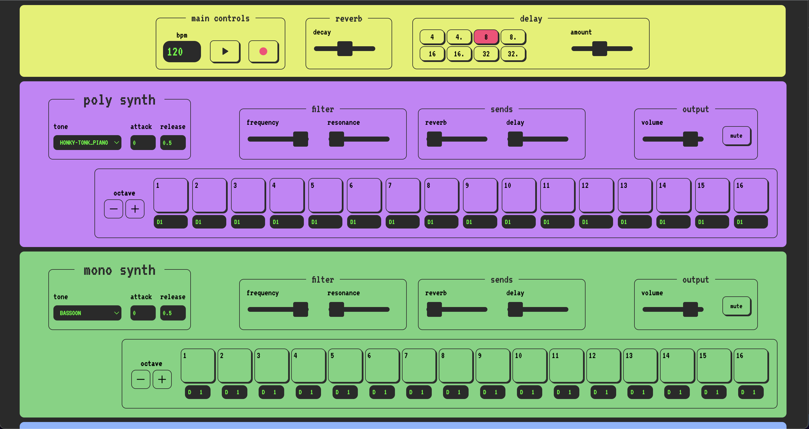

Synth World 2023
this is a browser based music sequencer and recorder, built using React and Tone.js. It consists of one polyphonic sampler 'synth', one monophonic sampler 'synth', and a 6 channel drum machine. the user can program a sequence on each of the instruments in real time, add effects and record their performance.
try it out